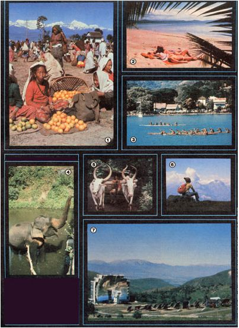

[1] Tangerines for sale at the Chinpur, Nepal market. [2] A busy afternoon in the South Seas. [3] You can learn to paddle a native canoe. [4] Sri Lankan elephants still roam mild. [5] Bullock carts are common in rural Sri Lanka . . . [6] as are spectacular views in the Austrian Alps. [7] A solar furnace in Odeillo, France